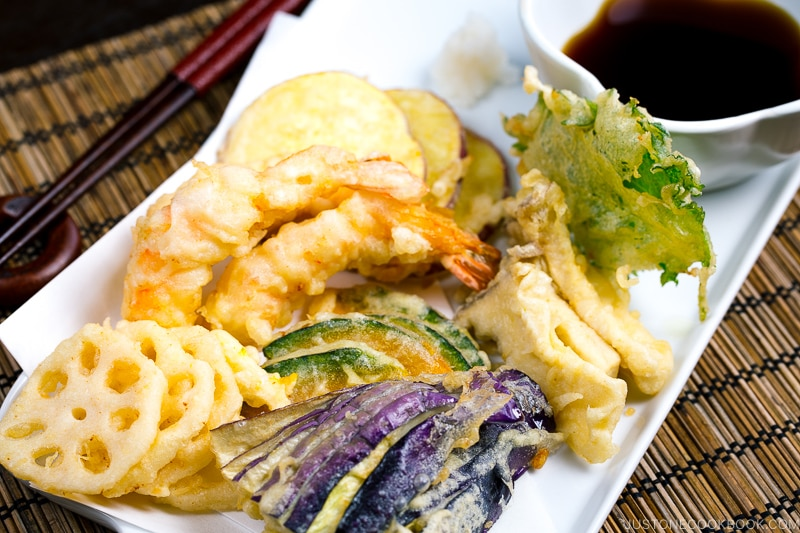

How to Make Hot Hot Tempura!

Tempura is a popular Japanese deep-fried seafood/vegetables encased in a light yet crisp batter. Learn how to make perfect tempura at home!
Ingredients
- Prawns
- Flour
- Water
- Vehicle Oil
Let's begin!
- Mash that flour and water together.
- Just kinda hope it becomes doughy.
- Wrap that tempura in that congealed flour/water combo.
- Heat that oil. If it starts screaming, lower the fire.
- Throw that prawn and flour and water combo in.
- Fry until golden brown.